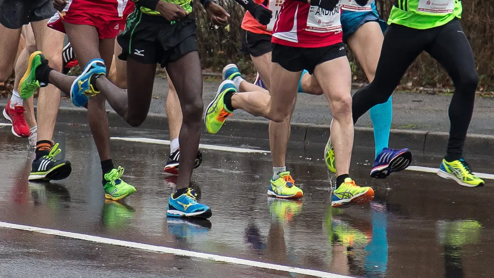

Lopp Att Springa
På denna sida samlar vi några av de mest prestigefyllda och inspirerande löparloppen runt om i världen. Om du inte ännu har några lopp på din bucket list så kommer du få det efter du har läst om loppen på denna sida! Här kommer vi gå djupare in på lopp såsom Boston maraton, Berlin maraton och Göteborgsvarvet, medan vi inte går in lika djupt på liknande lopp.
De 6 "World Marathon Majors"
"World Marathon Majors" är en serie av sex av världens mest prestigefyllda maratonlopp. Denna serie skapades för att främja och hylla elitlöpning genom att erbjuda en sammanhängande tävlingsserie där elitlöpare tävlar om en övergripande titel och prispengar. Varje lopp har sin egen unika bana, atmosfär och historia, och tillsammans representerar de några av de mest utmanande och eftertraktade maratonloppen i världen. Nedan finns en tabell med kort information om dessa marathon.
| Lopp | Land | Bästa Tid Herr | Bästa Tid Dam | Officiell Hemsida |
| Boston Marathon | USA | 2:03:02 | 2:19:59 | www.ba.org |
| London Marathon | England | 2:01:39 | 2:15:25 | tcslondonmarathon.com |
| Berlin Marathon | Tyskland | 2:01:09 | 2:17:18 | bmw-berlin-marathon.com |
| Chicago Marathon | USA | 2:03:45 | 2:17:18 | chicagomarathon.com |
| New York City Marathon | USA | 2:05:06 | 2:17:56 | nyrr.org |
| Tokyo Marathon | Japan | 2:02:50 | 2:17:56 | marathon.tokyo |
Kvalifikationskrav och Anmälningsinformation
Några av världens mest prestigefyllda löparlopp har kvalifikationskrav för att delta, vilket kräver att löpare uppfyller vissa prestandakriterier för att kvalificera sig. Dessa kvalifikationsgränser kan variera mellan olika lopp och kategorier av löpare, inklusive elitlöpare, åldersklasser och allmänhetens deltagare. Att förstå dessa krav är avgörande för löpare som strävar efter att delta i dessa speciella evenemang och kan påverka hur och när man anmäler sig till loppet. För exempelvis Boston Marathon krävs att löpare uppfyller specifika kvalifikationskrav baserat på ålder och kön för att kunna registrera sig för loppet. Liknande krav finns också för andra prestigefyllda lopp som New York City Marathon och London Marathon, där kvalificerade löpare måste uppnå en viss tid inom en bestämd tidsram för att vara berättigade till att delta.
Att förstå dessa kvalifikationskrav är viktigt för löpare som planerar att utmana sig själva och delta i dessa ikoniska löparlopp. Det är också viktigt att notera att även om kvalifikationskraven kan vara utmanande, är de också en möjlighet för löpare att sätta ambitiösa mål och sträva efter att förbättra sin prestation för att nå nya höjder inom löpningens värld.
Dessa kvalifikationskrav utgår ofta utifrån andra tävlingar du genomfört. Så var inte rädd att anmäla dig till ett lopp för att påbörja resan mot ett prestigefyllt, världskännt marathon i klass.
Bildkälla: Britannica
Bildkälla: Piqsels